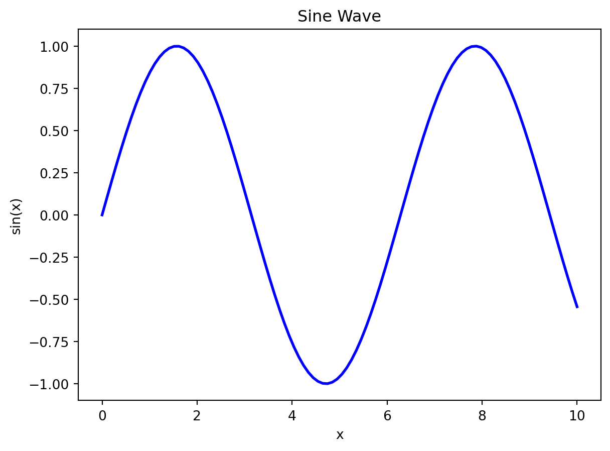
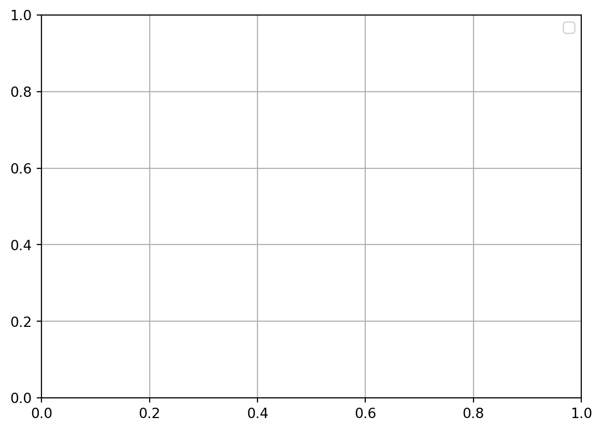

x = 10 # x 是整数类型 (int)
print(type(x))
x = "Hello" # 现在 x 是字符串类型 (str)
print(type(x))<class 'int'>
<class 'str'>第二章：Python —— 从了解 Python 开始 🚀
易学易用 👍:
应用广泛 🌍:
Python在许多领域都有广泛的应用，包括但不限于：
应用广泛 🌍 (续):
社区强大 💪:
需求量大 💼:
Python 是一种解释型、面向对象、动态数据类型的高级程序设计语言。
解释型语言如 Python，代码在执行时会被解释器逐行翻译成机器码。
工作流程：
.py 文件）。与编译型语言的区别：
优缺点比较：
| 编译型语言 | 解释型语言 | |
|---|---|---|
| 优点 | 执行速度快 | 开发速度快，跨平台性好 |
| 缺点 | 开发效率低，调试麻烦，跨平台性差 | 执行速度相对较慢 |
面向对象编程 (OOP) 是一种编程范式，它使用“对象”来设计应用程序和程序。对象可以包含数据（称为属性或字段）和操作这些数据的代码（称为方法）。
核心概念：
Dog 类，它具有 name、breed 和 age 等属性，以及 bark() 和 fetch() 等方法。Dog 对象：my_dog 和 your_dog，它们各自有不同的名字、品种和年龄。my_dog 对象的 name 属性可能是 “Buddy”。my_dog 对象可以调用 bark() 方法来发出叫声。Poodle 类，它继承自 Dog 类，并添加一个 groom() 方法。Dog 类和 Cat 类都可以有一个 make_sound() 方法，但它们的实现方式不同。优势：
在Python中，你不需要在声明变量时指定其数据类型。变量的类型在运行时根据你赋给它的值自动确定。
示例：
x = 10 # x 是整数类型 (int)
print(type(x))
x = "Hello" # 现在 x 是字符串类型 (str)
print(type(x))<class 'int'>
<class 'str'>x = 3.14 # 现在 x 是浮点数类型 (float)
print(type(x))
x = [1, 2, 3] # 现在 x 是列表类型 (list)
print(type(x))<class 'float'>
<class 'list'>优势：
需要注意的点：
类型提示 (Type Hints)：
def greet(name: str) -> str:
return "Hello, " + name
print(greet("World"))Hello, WorldPython 3 的设计者认为，为了保持语言的长期健康发展，有必要进行一些不兼容的更改，以解决 Python 2 中存在的一些设计缺陷和历史遗留问题。
主要原因：
print 语句：
print 是一个语句。print 变成了一个函数。print 的使用更加灵活，但也导致了不兼容。range() 和 xrange() 的合并。总结：
虽然 Python 3 的不兼容性给迁移带来了一些麻烦，但从长远来看，这些改进使得 Python 成为了一种更强大、更一致、更易于使用的语言。
垃圾回收 (Garbage Collection, GC) 是一种自动内存管理机制。当程序不再需要某些内存块（对象）时，垃圾回收器会自动检测并释放这些内存，避免内存泄漏，提高程序运行效率。
工作原理：
对象创建： 当你在Python中创建对象时，Python解释器会为这些对象分配内存空间。
引用计数（主要机制）： Python使用引用计数作为垃圾回收的主要机制。每个对象都有一个引用计数，记录有多少个变量或数据结构引用了该对象。
引用增加： 当你将一个对象赋值给一个变量、将对象添加到列表、或将对象作为参数传递给函数时，该对象的引用计数会增加。
引用减少： 当变量被重新赋值、离开作用域、或从列表中删除时，相应对象的引用计数会减少。
垃圾回收触发： 当一个对象的引用计数变为0时，意味着没有任何变量或数据结构引用该对象，该对象就变成了“垃圾”。Python的垃圾回收器会自动释放该对象占用的内存。
好处：
.exe 文件）。python --version，如果看到 Python 版本号，说明安装成功。/bin/bash -c "$(curl -fsSL https://raw.githubusercontent.com/Homebrew/install/HEAD/install.sh)"brew install pythonpython3 --version 或 python --version，如果看到 Python 版本号，说明安装成功。pip 进行安装
pip 是 Python 的包管理工具，它就像一个应用商店，可以让你轻松地安装、卸载和管理各种 Python 包（库）。pip install <package_name>: 安装指定的包。例如：pip install pandas。pip install <package_name>==<version>: 安装指定版本的包。例如：pip install pandas==1.5.0pip uninstall <package_name>: 卸载指定的包。pip 进行安装（续） - pip list: 列出已安装的所有包。 - pip show <package_name>: 显示指定包的详细信息。 - pip install --upgrade <package_name>: 升级包到最新的版本。https://pypi.tuna.tsinghua.edu.cn/simplehttps://mirrors.aliyun.com/pypi/simple/https://pypi.douban.com/simple/pip install 命令后加上 -i <镜像源地址>。例如：pip install pandas -i https://pypi.tuna.tsinghua.edu.cn/simple%APPDATA% 目录下创建 pip 文件夹，然后在 pip 文件夹中创建 pip.ini 文件，写入内容（见下页）。~/.pip/ 目录下创建 pip.conf 文件（如果目录不存在，则创建），写入内容（见后续页）。在 Windows 系统中永久更换 pip 源，可以按照以下步骤操作：
打开文件资源管理器。
在地址栏输入 %APPDATA%，然后按回车键。
在该目录下创建一个名为 pip 的新文件夹。
pip 文件夹已存在，则跳过此步骤。进入 pip 文件夹。
在 pip 文件夹中创建一个名为 pip.ini 的新文件。
pip.ini 文件已存在，则跳过此步骤。用文本编辑器打开 pip.ini 文件，并将以下内容复制粘贴到文件中：
[global]
index-url = https://pypi.tuna.tsinghua.edu.cn/simple保存并关闭 pip.ini 文件。
在 Linux 或 macOS 系统中永久更换 pip 源，可以按照以下步骤操作：
打开终端。
创建或编辑 ~/.pip/pip.conf 文件。
~/.pip 目录不存在，则先创建该目录：mkdir ~/.pippip.conf 文件：nano ~/.pip/pip.conf # 或者使用你喜欢的文本编辑器，如 vim将以下内容复制粘贴到 pip.conf 文件中：
[global]
index-url = https://pypi.tuna.tsinghua.edu.cn/simple保存并关闭 pip.conf 文件。
nano 编辑器，按 Ctrl + O 保存，然后按 Ctrl + X 退出。打开CMD或者Powershell这样的终端，在终端中输入：
pip install pandas scikit-learn matplotlib -i https://pypi.tuna.tsinghua.edu.cn/simple等待安装完毕即可。这里使用了清华的镜像源加速下载。
打开 Anaconda Prompt（Windows）或 终端（macOS/Linux）。
创建虚拟环境：
conda create -n myenv python=3.8 # 将 myenv 替换为你想要的环境名称- `-n` 选项指定虚拟环境的名称。
- `python=3.8` 指定虚拟环境中 Python 的版本。你可以根据需要更改版本号。激活虚拟环境：
conda activate myenvsource activate myenv在虚拟环境中安装包：
pip install pandas scikit-learn matplotlib退出虚拟环境：
conda deactivate💡 代码详细解释
# 开头的是单行注释，用于解释单行代码的作用。""" 包围的是多行注释（文档字符串），用于描述函数的功能、输入和输出。import os 引入了 os 模块，该模块提供了与操作系统交互的功能，如文件和目录操作。def fibo(num): 定义了一个名为 fibo 的函数。def 是定义函数的关键字。fibo 是函数名。(num) 表示函数接受一个参数 num。numbers = [1, 1]：初始化一个列表 numbers，包含斐波那契数列的前两项 1 和 1。for i in range(num - 2):：循环 num - 2 次。
range(num - 2) 生成一个从 0 到 num - 3 的整数序列。for 循环用于遍历这个序列，每次迭代将当前的整数赋值给变量 i。numbers.append(numbers[i] + numbers[i + 1])：计算新的斐波那契数，并将其添加到 numbers 列表的末尾。
numbers[i] 表示列表 numbers 中索引为 i 的元素。numbers[i] + numbers[i + 1] 计算当前项和下一项的和。append() 是列表的方法，用于在列表末尾添加元素。return numbers：返回计算好的斐波那契数列列表。answer = fibo(10) 调用了 fibo 函数，传入参数 10。fibo(10) 的返回值（一个列表）被赋值给变量 answer。print(answer) 将变量 answer 的值打印到控制台。if not os.path.exists('result'):：判断名为 result 的目录是否存在。
os.path.exists() 是 os 模块中的函数，用于检查文件或目录是否存在。not 表示取反。os.mkdir('result')：如果 result 目录不存在，则创建该目录。file = open('result/fibo.txt', 'w'): 以写入模式打开文件 ‘result/fibo.txt’。
open() 函数返回一个文件对象，赋值给变量 file。for num in answer:：遍历 answer 列表中的每个数字。file.write(str(num) + ' ')：将当前数字转换为字符串，并在末尾添加一个空格，然后写入文件。
str(num) 将数字 num 转换为字符串。+ 用于连接字符串。file.write() 是文件对象的方法，用于向文件中写入内容。file.close()：关闭文件。关闭文件可以释放资源，并确保写入的内容被保存到磁盘。💡 数学公式
斐波那契数列由以下递推关系定义：
其中，\(F(n)\) 表示斐波那契数列的第 \(n\) 项。
通项公式
斐波那契数列的通项公式为：
\[ F(n) = \frac{1}{\sqrt{5}}\left[\left(\frac{1+\sqrt{5}}{2}\right)^n - \left(\frac{1-\sqrt{5}}{2}\right)^n\right] \]
与黄金分割的关系
斐波那契数列与黄金分割（\(\phi = \frac{1+\sqrt{5}}{2} \approx 1.618\)）密切相关。随着项数的增加，斐波那契数列中相邻两项的比值会越来越接近黄金分割。
\[ \lim_{n\to\infty} \frac{F(n+1)}{F(n)} = \phi \]
应用
斐波那契数列在自然界和人类社会中有很多有趣的出现，例如：
{}。if, elif, else）：
if 语句后面的代码块需要缩进。elif 和 else 语句后面的代码块也需要缩进，并且与对应的 if 语句对齐。if condition1:
# 如果 condition1 为真，执行这里的代码
statement1
elif condition2:
# 如果 condition2 为真，执行这里的代码
statement2
else:
# 如果以上条件都不为真，执行这里的代码
statement3for, while):
for item in iterable:
# 对于 iterable 中的每个元素，执行这里的代码
statement1
while condition:
# 当 condition 为真时，重复执行这里的代码
statement2def):
def function_name(parameters):
# 函数体，执行函数的具体操作
statement1
statement2
return value # 可选的返回值# 错误示例
def my_function():
print("Hello")
print("World") # 缩进不一致# 错误示例
if x > 0:
print("x is positive") # 缩进错误
else:
print("x is non-positive") # 错误示例
for i in range(10):
print(i) # 缺少缩进始终使用 4 个空格进行缩进。
保持缩进一致。
使用 IDE 或文本编辑器的自动缩进功能。
注意代码块的嵌套。
在函数、类、条件语句、循环等后面使用冒号 :，然后换行并缩进。
避免过深的嵌套。
.py 文件），每个模块包含相关的函数、类和变量。os, time, datetime, sys, math, random, re, json, urllib等。pip 安装后才能使用。scipy, scikit-learn等。os 模块 📁 (1/3)os 模块提供了与操作系统交互的功能，例如：
os.getcwd(): 获取当前工作目录。os.chdir(path): 改变当前工作目录。os.listdir(path): 列出指定目录下的文件和子目录。os.mkdir(path): 创建目录。os 模块 📁 (2/3)os.makedirs(path): 递归创建目录。os.remove(path): 删除文件。os.rmdir(path): 删除空目录。os.removedirs(path): 递归删除空目录。os.rename(src, dst): 重命名文件或目录。os 模块 📁 (3/3)os.path.exists(path): 判断文件或目录是否存在。os.path.isfile(path): 判断是否为文件。os.path.isdir(path): 判断是否为目录。os.path.join(path1, path2, ...): 拼接路径。os.path.split(path): 分割路径为目录和文件名。os.path.splitext(path): 分割文件名为文件名和扩展名。os模块：进程管理和其他os.system(command): 执行系统命令。os.popen(command): 执行系统命令并返回输出。os.getpid(): 获取当前进程 ID。os.getppid(): 获取父进程 ID。os.environ: 获取所有环境变量。os.getenv(key): 获取指定环境变量的值。os.putenv(key, value): 设置环境变量。os.name: 获取操作系统名称。os.sep: 获取路径分隔符。os 模块示例代码示例：
import os
# 获取当前工作目录
current_dir = os.getcwd()
print(f"当前工作目录：{current_dir}")
# 创建目录
if not os.path.exists('mydir'):
os.mkdir('mydir')
print("创建目录：mydir")
# 列出目录内容
files = os.listdir('.')
print(f"当前目录下的文件和子目录：{files}")当前工作目录：/home/runner/work/web-slide-python-visual/web-slide-python-visual/qmd
创建目录：mydir
当前目录下的文件和子目录：['_quarto.yml', 'result', 'chapter2.qmd', 'chapter2.quarto_ipynb', 'zwu_logo.png', 'chapter7.qmd', 'mydir', 'chapter3.qmd', '.gitignore', 'chapter1.qmd', 'chapter5.qmd', 'chapter8.qmd', 'chapter6.qmd', 'chapter4.qmd', 'my.css']datetime 模块 📅 (1/2)datetime 模块提供了处理日期和时间的类和函数。
主要类：
date: 表示日期（年、月、日）。time: 表示时间（时、分、秒、微秒）。datetime: 表示日期和时间（年、月、日、时、分、秒、微秒）。datetime 模块 📅 (2/2)主要类（续）：
timedelta: 表示时间间隔。timezone: 表示时区。datetime模块：创建对象常用操作：
from datetime import date, time, datetime, timedelta
# 创建日期对象
today = date.today()
print(f"今天的日期：{today}")
# 创建时间对象
now = time(10, 30, 0) # 10:30:00
print(f"当前时间：{now}")
# 创建日期时间对象
now = datetime.now()
print(f"当前日期和时间：{now}")今天的日期：2025-02-17
当前时间：10:30:00
当前日期和时间：2025-02-17 16:31:58.087462datetime模块：指定日期时间# 指定日期和时间
dt = datetime(2023, 10, 27, 15, 0, 0) # 2023-10-27 15:00:00
print(f"指定日期和时间：{dt}")指定日期和时间：2023-10-27 15:00:00datetime 模块：获取信息# 获取年、月、日、时、分、秒
year = now.year
month = now.month
day = now.day
hour = now.hour
minute = now.minute
second = now.second
print(f"年：{year}, 月：{month}, 日：{day}, 时：{hour}, 分：{minute}, 秒：{second}")年：2025, 月：2, 日：17, 时：16, 分：31, 秒：58datetime模块：日期时间运算# 计算时间间隔
delta = timedelta(days=7) # 7 天
print(f"7 天后的日期：{today + delta}")
# 计算两个日期之间的差值
diff = date(2024, 1, 1) - today
print(f"距离 2024 年 1 月 1 日还有：{diff.days} 天")7 天后的日期：2025-02-24
距离 2024 年 1 月 1 日还有：-413 天datetime 模块：格式化# 将日期时间对象格式化为字符串
formatted_date = now.strftime("%Y-%m-%d %H:%M:%S")
print(f"格式化后的日期和时间：{formatted_date}")
# 将字符串解析为日期时间对象
date_str = "2023-10-27"
parsed_date = datetime.strptime(date_str, "%Y-%m-%d").date()
print(f"解析后的日期：{parsed_date}")格式化后的日期和时间：2025-02-17 16:31:58
解析后的日期：2023-10-27datetime模块：时区处理datetime 模块本身不提供完善的时区处理功能。pytz 或 dateutil 来处理时区相关的操作。💡 什么是 Series？
创建 Series
import pandas as pd
# 从列表创建
data = [10, 20, 30, 40, 50]
s = pd.Series(data)
print(s)0 10
1 20
2 30
3 40
4 50
dtype: int64# 从字典创建
data = {'a': 10, 'b': 20, 'c': 30}
s = pd.Series(data)
print(s)a 10
b 20
c 30
dtype: int64# 指定索引
data = [10, 20, 30]
index = ['x', 'y', 'z']
s = pd.Series(data, index=index)
print(s)x 10
y 20
z 30
dtype: int64访问 Series 中的元素
# 通过位置访问
print(s[0]) # 10
# 通过标签访问
print(s['x']) # 1010
10/tmp/ipykernel_2543/971424159.py:2: FutureWarning: Series.__getitem__ treating keys as positions is deprecated. In a future version, integer keys will always be treated as labels (consistent with DataFrame behavior). To access a value by position, use `ser.iloc[pos]`
print(s[0]) # 10# 切片
print(s[1:3]) # 获取索引为 1 和 2 的元素
print(s['y':'z']) # 获取标签为 'y' 和 'z' 的元素y 20
z 30
dtype: int64
y 20
z 30
dtype: int64import pandas as pd
data = [10, 20, 30]
index = ['x', 'y', 'z']
s = pd.Series(data, index=index)
# 与标量运算
print(s * 2) # 每个元素乘以 2x 20
y 40
z 60
dtype: int64# 与另一个 Series 运算
s1 = pd.Series([1, 2, 3], index=['x', 'y', 'z'])
s2 = pd.Series([4, 5, 6], index=['x', 'y', 'z'])
print(s1 + s2) # 对应元素相加
# 常用统计方法
print(s.mean()) # 平均值
print(s.sum()) # 求和
print(s.max()) # 最大值
print(s.min()) # 最小值x 5
y 7
z 9
dtype: int64
20.0
60
30
10💡 什么是 DataFrame？
创建 DataFrame
import pandas as pd
# 从字典创建
data = {
'name': ['Alice', 'Bob', 'Charlie'],
'age': [25, 30, 35],
'city': ['New York', 'London', 'Paris']
}
df = pd.DataFrame(data)
print(df) name age city
0 Alice 25 New York
1 Bob 30 London
2 Charlie 35 Paris# 从列表的列表创建
data = [
['Alice', 25, 'New York'],
['Bob', 30, 'London'],
['Charlie', 35, 'Paris']
]
columns = ['name', 'age', 'city']
df = pd.DataFrame(data, columns=columns)
print(df) name age city
0 Alice 25 New York
1 Bob 30 London
2 Charlie 35 Paris访问 DataFrame 中的数据
# 获取列
print(df['name']) # 获取 'name' 列
print(df.age) # 另一种获取列的方式0 Alice
1 Bob
2 Charlie
Name: name, dtype: object
0 25
1 30
2 35
Name: age, dtype: int64# 获取行
print(df.loc[0]) # 获取第一行（索引为 0）
print(df.iloc[0]) # 另一种获取第一行的方式name Alice
age 25
city New York
Name: 0, dtype: object
name Alice
age 25
city New York
Name: 0, dtype: object# 获取特定单元格
print(df.loc[0, 'name']) # 获取第一行 'name' 列的值
print(df.iloc[0, 0]) # 另一种获取方式Alice
Alice# 切片
print(df[0:2]) # 获取前两行
print(df[['name', 'age']]) # 获取 'name' 和 'age' 列 name age city
0 Alice 25 New York
1 Bob 30 London
name age
0 Alice 25
1 Bob 30
2 Charlie 35# 添加列
df['salary'] = [50000, 60000, 70000]
# 筛选数据
print(df[df['age'] > 30]) # 获取年龄大于 30 的行 name age city salary
2 Charlie 35 Paris 70000# 排序
print(df.sort_values('age')) # 按年龄升序排序
# 分组统计
print(df.groupby('name')['salary'].mean()) # 按姓名分组，计算平均薪资 name age city salary
0 Alice 25 New York 50000
1 Bob 30 London 60000
2 Charlie 35 Paris 70000
name
Alice 50000.0
Bob 60000.0
Charlie 70000.0
Name: salary, dtype: float64
💡 什么是线性回归？
线性回归的数学模型
import numpy as np
from sklearn.linear_model import LinearRegression
from sklearn.model_selection import train_test_split
from sklearn.metrics import mean_squared_error
# 1. 准备数据
X = np.array([[1, 1], [1, 2], [2, 2], [2, 3]]) # 特征
y = np.dot(X, np.array([1, 2])) + 3 # 目标变量
# 2. 划分训练集和测试集
X_train, X_test, y_train, y_test = train_test_split(X, y, test_size=0.2, random_state=42)
# 3. 创建模型
model = LinearRegression()
# 4. 训练模型
model.fit(X_train, y_train)LinearRegression()In a Jupyter environment, please rerun this cell to show the HTML representation or trust the notebook.
LinearRegression()
# 5. 预测
y_pred = model.predict(X_test)
# 6. 评估模型
mse = mean_squared_error(y_test, y_pred)
print(f"均方误差：{mse}")
# 7. 查看模型参数
print(f"权重：{model.coef_}")
print(f"偏置：{model.intercept_}")均方误差：3.1554436208840472e-30
权重：[1. 2.]
偏置：2.9999999999999956
💡 如何使用 Matplotlib 绘制折线图？
import matplotlib.pyplot as plt
import numpy as np
# 1. 准备数据
x = np.linspace(0, 10, 100) # 生成 0 到 10 之间的 100 个等间距点
y = np.sin(x) # 计算正弦值
# 2. 创建图表
plt.figure(figsize=(8, 6)) # 创建一个 8x6 英寸的图表<Figure size 768x576 with 0 Axes><Figure size 768x576 with 0 Axes># 3. 绘制折线图
plt.plot(x, y, label='sin(x)', color='blue', linestyle='-', linewidth=2)
# 4. 添加标题和标签
plt.title('Sine Wave')
plt.xlabel('x')
plt.ylabel('sin(x)')Text(0, 0.5, 'sin(x)')
# 5. 添加图例
plt.legend()
# 6. 添加网格线
plt.grid(True)
# 7. 显示图表
plt.show()/tmp/ipykernel_2543/1043465315.py:2: UserWarning: No artists with labels found to put in legend. Note that artists whose label start with an underscore are ignored when legend() is called with no argument.
plt.legend()
plt.figure(): 创建一个图表对象。
figsize: 指定图表的大小（英寸）。plt.plot(): 绘制折线图。
x: x 轴数据。y: y 轴数据。label: 曲线标签（用于图例）。color: 曲线颜色。plt.plot(): 绘制折线图。（续）
linestyle: 曲线线型。linewidth: 曲线线宽。plt.title(): 设置图表标题。plt.xlabel(): 设置 x 轴标签。plt.ylabel(): 设置 y 轴标签。plt.legend(): 显示图例。plt.grid(): 显示网格线。plt.show(): 显示图表。💡 如何启动Jupyter Notebook？
cd 命令切换目录。jupyter notebook💡 代码详细解释
这段代码使用了 matplotlib 库在极坐标系中绘制双纽线。
import matplotlib.pyplot as pltimport numpy as nptheta_list = np.arange(0, 2*np.pi, 0.01)：生成一组角度值。
np.arange() 是 numpy 中的函数，用于生成等差数列。np.pi 是 numpy 中的常量，表示圆周率 π。r = [2*np.cos(2*theta) for theta in theta_list]：根据双纽线的极坐标方程计算对应的半径值。
np.cos() 是 numpy 中的函数，用于计算余弦值。axe = plt.subplot(projection='polar')：创建一个极坐标子图。
plt.subplot() 用于创建子图。projection='polar' 指定子图的类型为极坐标。axe 对象代表这个子图。axe.plot(theta_list, r)：在极坐标子图中绘制双纽线。
axe.plot() 是 Axes 对象的方法，用于绘制曲线。axe.set_rticks([])：隐藏半径刻度。plt.show()：显示绘制好的图表。💡 数学公式
双纽线的极坐标方程为：
\[ r^2 = a^2 \cos(2\theta) \]
或
\[ r = \pm a\sqrt{\cos(2\theta)} \]
其中，\(r\) 是极径，\(\theta\) 是极角，\(a\) 是一个常数。
💡 直角坐标方程
双纽线的直角坐标方程为：
\[ (x^2 + y^2)^2 = a^2(x^2 - y^2) \]
💡 参数方程
双纽线的参数方程为：
\[ x = a\sqrt{\cos(2t)}\cos(t) \]
\[ y = a\sqrt{\cos(2t)}\sin(t) \]
其中，\(t\) 是参数。
💡 性质